Estudo de casoProduto digital no ar
Study
Aplicativo web de estudos para quem aprende por conta própria. A pessoa escolhe um tema, segue uma trilha com videoaula, leitura, prática e avaliação, e estuda com o cronômetro de foco ligado dentro da própria trilha. Funciona no celular e no computador.
Como ler este case. As afirmações importantes têm uma etiqueta:
- Implementadoexiste no produto que está no ar.
- Designdecisão de produto ou de interface.
- Hipótesepremissa que ainda não foi validada com pessoas.
- Planejadopesquisa, teste ou funcionalidade que ainda não aconteceu.
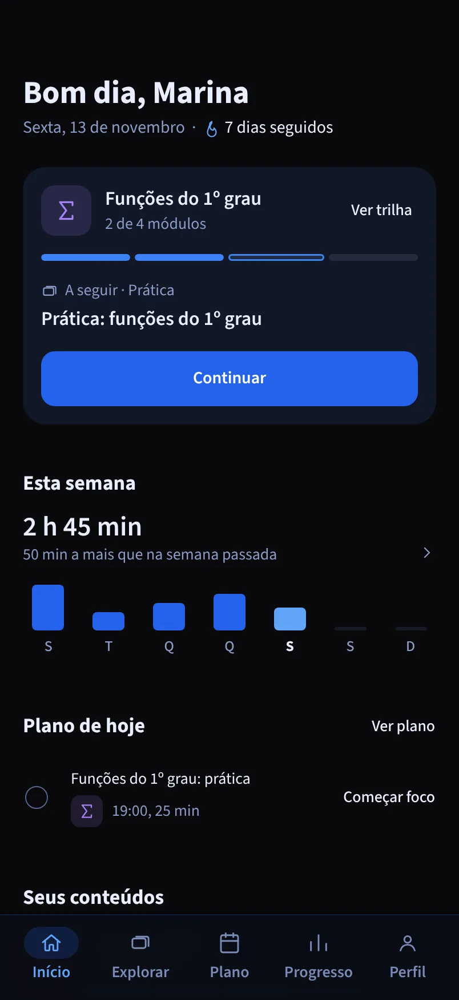
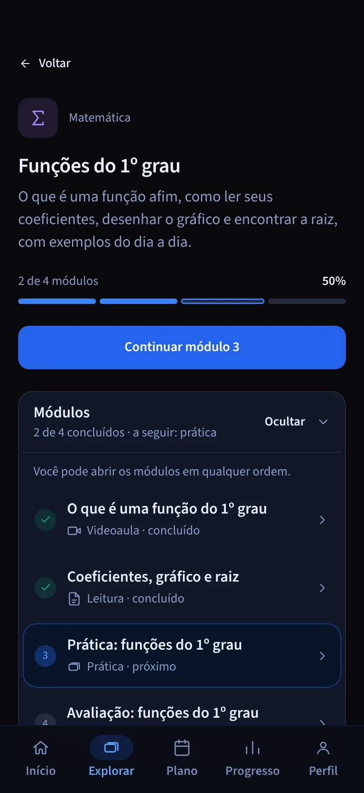
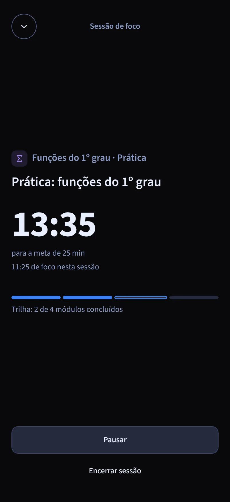
Nesta páginaResumo
Resumo do projeto
O Study organiza o estudo em torno de uma trilha. A pessoa escolhe o que quer aprender, o app sugere a ordem dos módulos e o tempo de foco fica registrado enquanto ela estuda.
Cada trilha tem quatro tipos de módulo: videoaula, leitura, prática com flashcards e avaliação. O Início mostra qual é o próximo passo, o Plano organiza a semana e o Progresso mostra quanto tempo de foco a pessoa somou e há quantos dias estuda sem parar. Implementado
O produto está no ar e funciona, mas ainda não passou por testes com usuários. Por isso este case separa o que está construído do que é hipótese e do que ainda vai acontecer.
- Problema (hipótese)
- Quem estuda sozinho acha conteúdo de sobra e pouca estrutura para decidir o que estudar, em que ordem e por quanto tempo.
- O que fiz
- Criei o produto e a marca, defini escopo, fluxos e regras, e desenhei a interface e o design system para celular e computador, nos temas claro e escuro.
- Decisões-chave
- O foco começa dentro da trilha
- Ordem sugerida, sem módulo bloqueado
- Usar o app antes de criar conta
- Situação
- No ar, versão 1.0. Código feito com apoio de IA a partir das minhas decisões. Testes com 5 a 8 estudantes planejados.
- Plataforma
- Web. No celular, uma coluna com cinco abas embaixo. A partir de 1024 px, navegação lateral recolhível e telas desenhadas para a largura do computador.
- Para quem
- Estudantes que aprendem por conta própria: vestibulandos, universitários e autodidatas.
- Idioma
- Português.
- Dados
- Ficam no navegador do aparelho, separados por pessoa.
As telas deste case usam dados de demonstração: a estudante Marina e o histórico dela são fictícios.
Problema e público
Quem estuda por conta própria gasta energia decidindo antes de estudar: qual assunto, em que ordem, com qual material e por quanto tempo. Vídeo num lugar, texto em outro e cronômetro em um terceiro app deixam o estudo espalhado.
Ainda não fiz pesquisa com estudantes. Este é o problema que o produto se propõe a resolver, não um problema que eu tenha validado.
Para quem desenhei
O público de partida são estudantes que aprendem por conta própria: quem se prepara para o vestibular, universitários e autodidatas. O ENEM aparece como atalho no catálogo, mas o produto não se limita a ele: qualquer tema pode virar trilha.
- Saber o que estudar agora, sem escolher entre dezenas de opções.
- Continuar de onde parou, mesmo depois de alguns dias.
- Ter vídeo, texto, prática e avaliação no mesmo lugar.
- Ver o tempo de estudo de verdade, não uma lista de itens marcados.
- Experimentar antes de entregar e-mail ou senha.
Proposta de valor
Escolha um tema, siga a trilha e estude com o foco ligado. O Study mostra o próximo passo e guarda o tempo que você dedicou.
Meu papel, autoria e ferramentas
O Study é um projeto independente, sem equipe e sem cliente. Recebi o retorno de um designer mais experiente ao longo do caminho e evoluí o produto por etapas: diagnóstico, referências, estratégia, design system, interfaces e implementação.
| Frente | Quem ou o quê |
|---|---|
| Concepção e regras de produto | Eu: o problema, o público, o escopo da versão 1.0 e as regras, como a nota mínima da avaliação e a conclusão da videoaula. |
| Marca | Eu: nome, símbolo, paleta e a animação de abertura. |
| Fluxos, interface e design system | Eu: arquitetura, telas no Figma, tokens, componentes, temas e as versões de celular e computador. |
| Implementação do código | Feita com apoio de ferramentas de IA (Claude e DeepSeek), a partir das minhas decisões e revisada por mim tela a tela. Não me apresento como desenvolvedor. |
| IA dentro do produto | API do Gemini: monta a trilha e gera leitura, flashcards, avaliação e o resumo de cada matéria. |
| Serviços externos | API de dados do YouTube (videoaulas), login do Google, GitHub Pages (app) e Render (servidor da API). |
Restrições
- Projeto solo e sem orçamento: hospedagem gratuita, que dorme sem uso, e cotas gratuitas das APIs.
- Sem servidor de contas: os dados ficam no navegador, e o login do Google não promete sincronizar aparelhos.
- App em um único arquivo HTML, com React e Tailwind carregados por CDN, sem etapa de build.
- Sem acesso a usuários durante a construção, então público e problema continuam como hipóteses.
Da primeira ideia ao produto
A primeira concepção do Study, desenhada no Figma, era um app de cronômetro. A Home perguntava “Pronto para focar?”, tinha um relógio de 25 minutos no centro e o conteúdo aparecia depois, como “Continuar onde parou” e “Recomendado agora”.
Ao desenhar o resto do produto, a trilha virou o centro. Quem abre o app quer saber o que estudar, e o tempo de foco faz mais sentido medindo esse estudo do que competindo com ele. Design
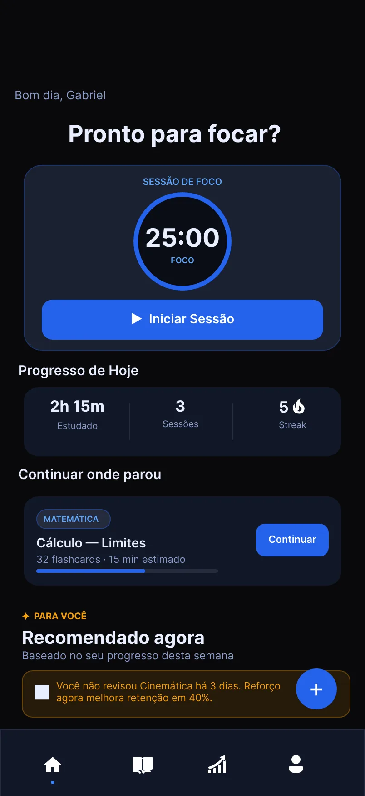
| Primeira concepção | Produto hoje | Por quê |
|---|---|---|
| Cronômetro e “Iniciar Sessão” no topo da Home. | Cartão da trilha com o próximo módulo e um botão Continuar. | Um cronômetro sozinho não diz o que estudar. O próximo passo é a decisão que a pessoa precisa tomar. |
| Sessão de foco solta, sem ligação com o conteúdo. | O foco começa dentro do módulo, numa barra que acompanha a navegação. | Assim cada minuto registrado pertence a uma trilha e aparece no progresso dela. |
| “Continuar onde parou” e “Recomendado agora” em blocos separados. | Uma só recomendação, com “A seguir” e o nome do módulo. | Duas sugestões na mesma tela voltavam a pedir uma escolha. |
| Quatro abas, só com ícones. | Cinco abas com rótulo: Início, Explorar, Plano, Progresso e Perfil. | O planejamento da semana ganhou lugar próprio, e ícone sem texto deixa margem para dúvida. |
| “Streak” e estatísticas de hoje. | “Dias seguidos” no Início e “Ofensiva” no Progresso, com uma frase explicando a regra. | O termo em inglês não ajuda quem não conhece o conceito. |
| Só celular. | Celular e computador, cada um com navegação e modo foco próprios. | Muita gente estuda no notebook, com a tela inteira à disposição. |
Nenhuma dessas mudanças foi testada com pessoas. Elas vêm do desenho do produto e do retorno de um designer mais experiente.
Arquitetura da informação e fluxos
São cinco destinos, com texto e ícone. No celular, eles ficam numa barra de abas. No computador, numa navegação lateral que pode ser recolhida, com Configurações e o perfil no rodapé. Implementado
Início
- Saudação e dias seguidos
- Próximo passo da trilha
- Foco da semana
- Plano de hoje
- Seus conteúdos
Explorar
- Busca
- Criar conteúdo
- Matérias em gavetas
- Temas que mais caem no ENEM
- Trilhas
Plano
- Semana e mês
- Atividades do dia
- Começar foco pela atividade
- Tarefas sem data
Progresso
- Foco por dia da semana
- Ofensiva e melhor sequência
- Conquistas
- Avanço de cada trilha
Perfil
- Histórico recente
- Trilhas e matérias
- Configurações
- Ajuda
O caminho principal
- Escolher um temaEm Explorar, a pessoa abre uma matéria e adiciona um tema do catálogo, ou cria um conteúdo próprio com matéria e título.
- Receber a trilhaO Study monta os módulos: videoaula, leitura, prática e avaliação. O próximo fica em destaque.
- Estudar com o foco ligadoDentro do módulo, “Começar foco” liga o cronômetro com a meta padrão. A barra acompanha a navegação e abre o modo foco.
- Encerrar e seguirO app confirma o tempo, registra a sessão e oferece o próximo módulo da trilha.
- AcompanharInício e Progresso mostram o foco da semana, os dias seguidos e quanto falta em cada trilha.
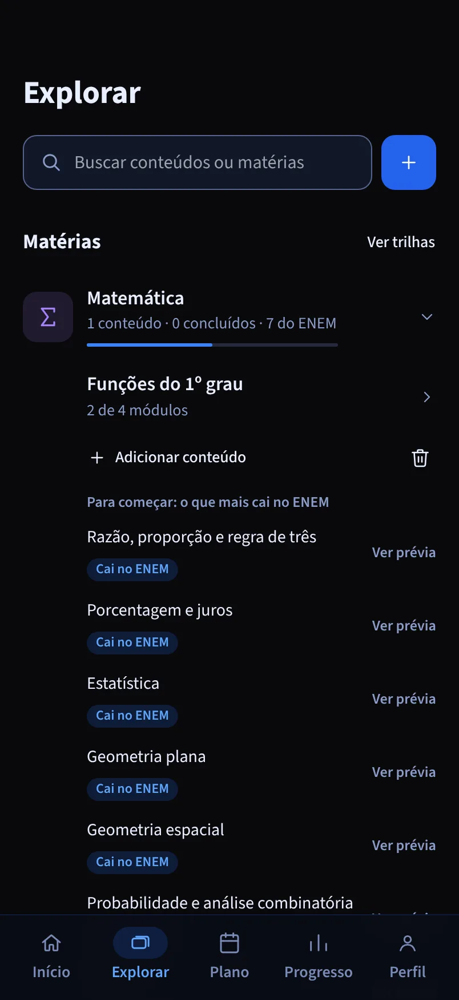
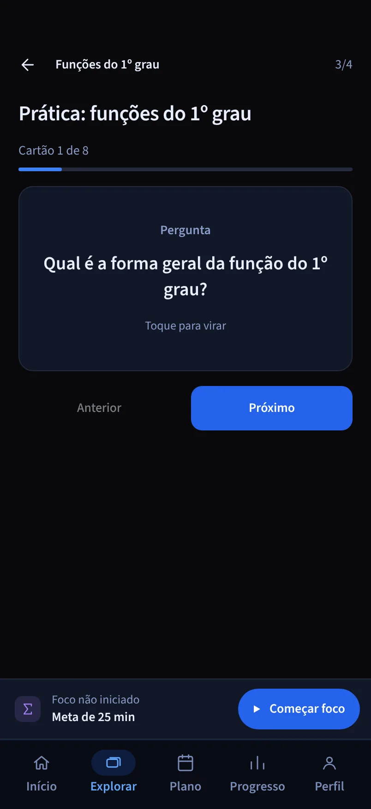
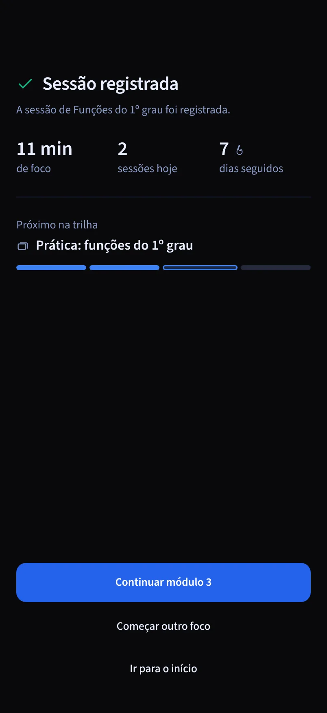
Entrar sem barreira
Pedir conta antes de mostrar o produto afasta quem só quer experimentar. A entrada tem três caminhos, e só o que usa IA pede um perfil. Implementado
- Continuar com o Google. Para quem já tem conta e quer entrar com um toque.
- Criar um perfil. Nome e usuário, sem e-mail e sem senha. Tem os mesmos recursos da conta Google, inclusive a IA. Não há senha porque, sem servidor, ela não protegeria nada.
- Só dar uma olhada. Três trilhas de exemplo escritas com antecedência (Funções do 1º grau, Revolução Francesa e Present Perfect), que abrem na hora, sem servidor e sem IA. O progresso some após 30 dias sem uso.
Se o visitante tenta criar um conteúdo, uma folha explica por que precisa de perfil. Quando ele entra, o que já fez vai junto e o app volta para a ação que ele tinha pedido.
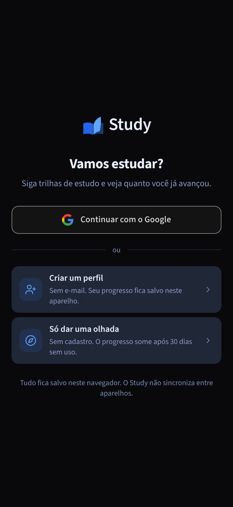
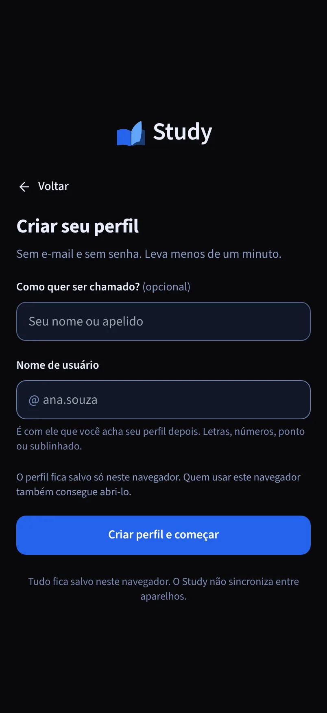
A validar. Não sei se as pessoas entendem a diferença entre perfil local e conta Google, nem se o aviso de que os dados ficam no navegador é lido.
Decisões de UX e justificativas
Cada decisão tem um motivo de projeto e um ponto que ainda precisa ser visto com pessoas.
O foco mora dentro da trilha
“Começar foco” aparece numa barra presa acima das abas enquanto a pessoa está num módulo. Com a sessão ligada, a barra mostra o tempo que falta e a trilha, e um toque abre o modo foco.
A validar. Quem quer só cronometrar, sem trilha, pode não achar onde começar.
ImplementadoOrdem sugerida, sem bloqueio
A trilha destaca o próximo módulo e o botão principal leva até ele, mas todos podem ser abertos. Quem já sabe parte do assunto não fica preso.
A validar. Sem bloqueio, alguém pode pular a base e ir direto para a avaliação.
ImplementadoTempo registrado é tempo de atenção
Se o app vai para segundo plano, com outra aba ou a tela bloqueada, o foco pausa sozinho. O tempo pausado não conta, e o diálogo de encerrar diz exatamente quanto será salvo.
A validar. Quem estuda com o livro e o celular de lado pode achar a pausa automática chata.
ImplementadoDuas medidas que não se misturam
O avanço da trilha vem dos módulos concluídos. Horas, dias seguidos e conquistas vêm das sessões de foco. Estudar muito tempo não conclui um módulo, e concluir um módulo não inventa tempo.
A validar. Não sei se fica claro por que uma trilha está em 50% com horas de estudo registradas.
DesignCritério claro para concluir
A videoaula conclui com 75% do vídeo assistido, e quem já domina o assunto pode concluir antes. A avaliação tem 10 questões, nota de 0 a 10, e pede 7,0 para avançar. A regra aparece escrita na própria tela.
A validar. A nota mínima pode desanimar quem erra na primeira tentativa.
ImplementadoUm caminho só para criar
O botão de criar leva direto para Criar conteúdo, com matéria e título na mesma tela. Se a matéria não existe, “Nova matéria” abre por cima, com nome, ícone ou emoji e cor, e volta já selecionada.
A validar. Não medi se as pessoas preferem partir do catálogo ou do zero.
ImplementadoMatérias como gavetas
Explorar lista as matérias, não uma vitrine de conteúdos. Aberta, a matéria mostra o que a pessoa já estuda e, embaixo, os temas que mais caem no ENEM, com prévia antes de adicionar.
A validar. O catálogo do ENEM pode parecer fora de lugar para quem não vai prestar a prova.
ImplementadoComputador com telas próprias
A partir de 1024 px, as abas viram navegação lateral, o Início ganha duas colunas, as matérias formam uma grade e o modo foco ocupa a tela, com o cronômetro grande e o Esc para recolher.
A validar. Não sei se um cronômetro tão grande ajuda a manter o foco ou distrai.
Implementado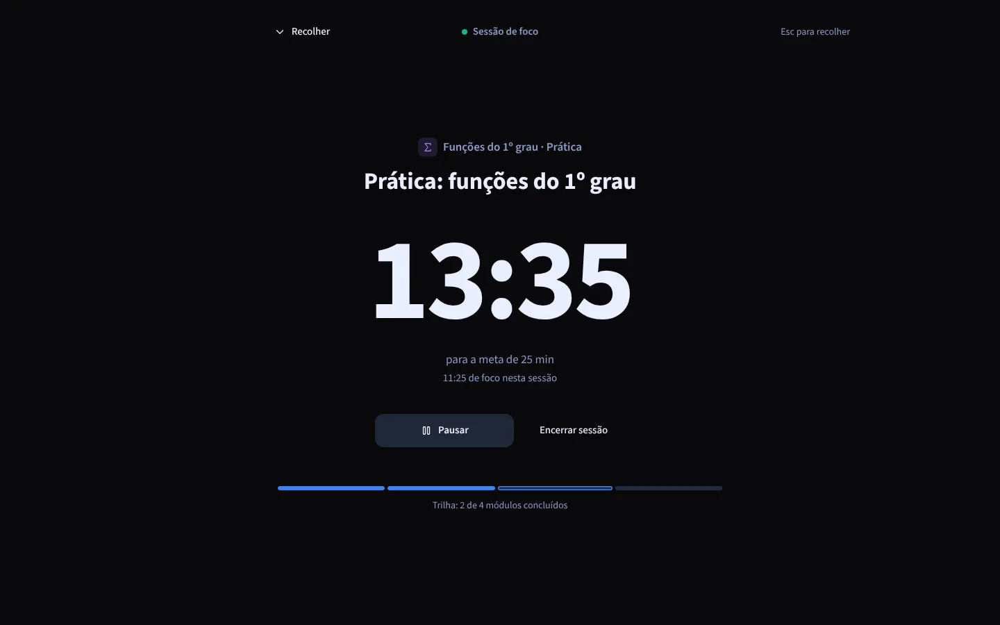
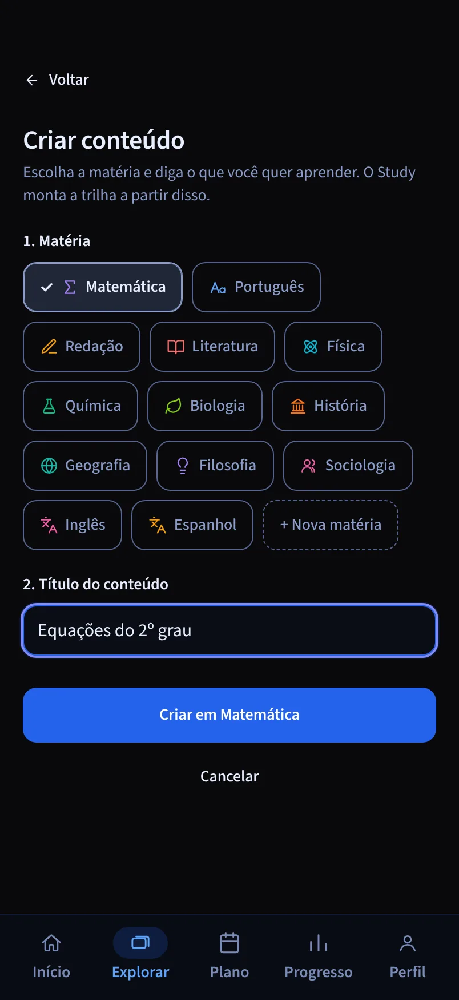
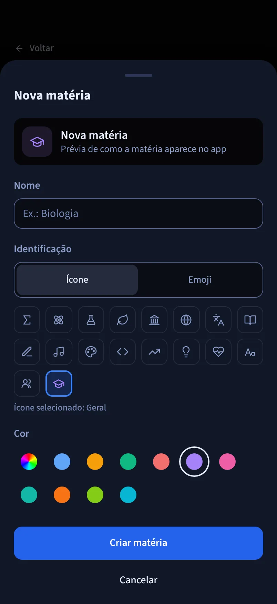
O produto, tela a tela
Todas as telas abaixo são do produto como ele está hoje, com dados de demonstração. Assim dá para ver o Study sem entrar nem esperar o servidor gratuito acordar.
No celular
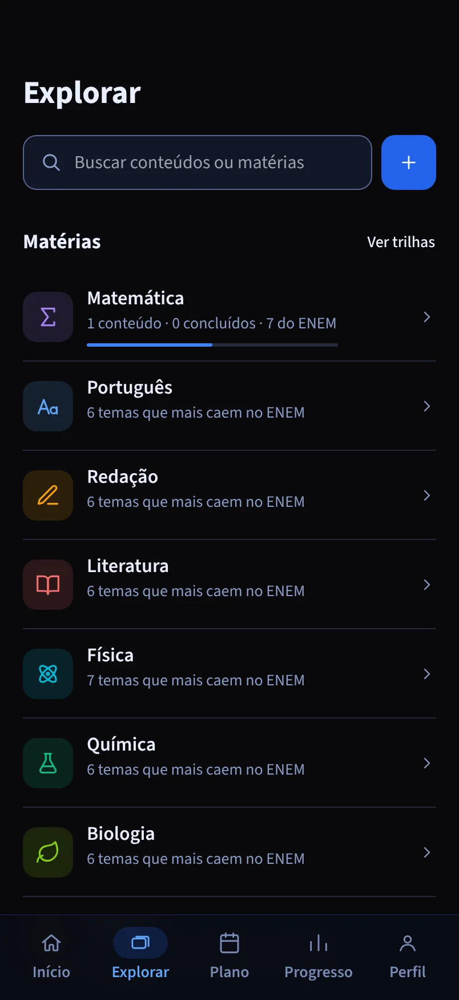
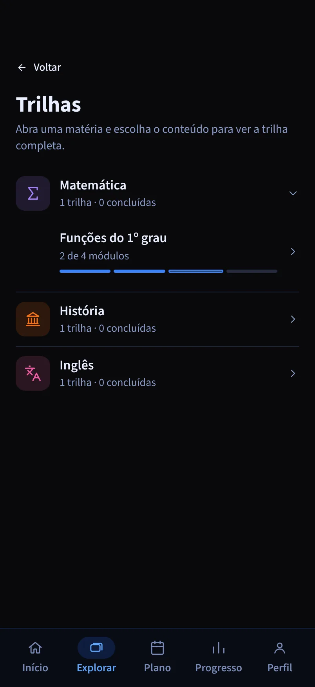
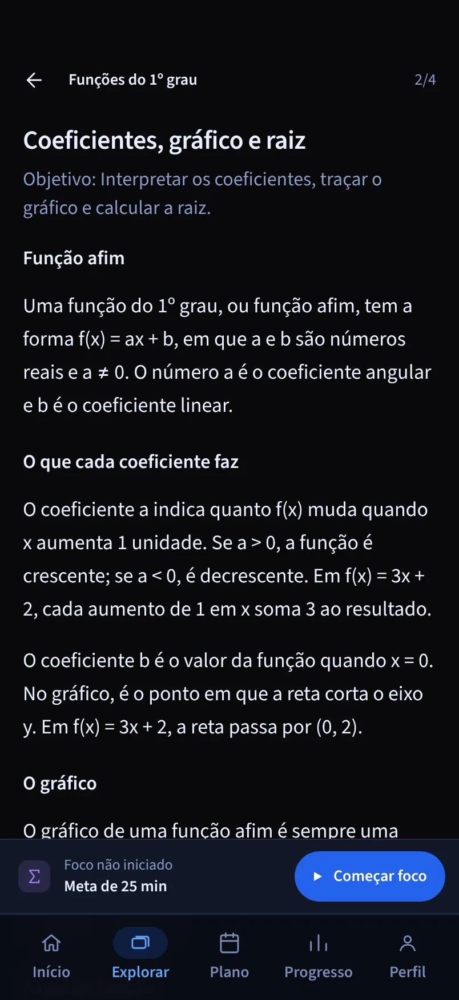
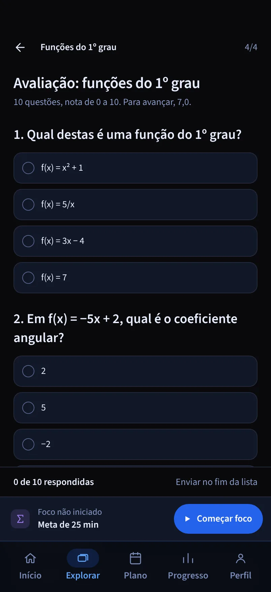
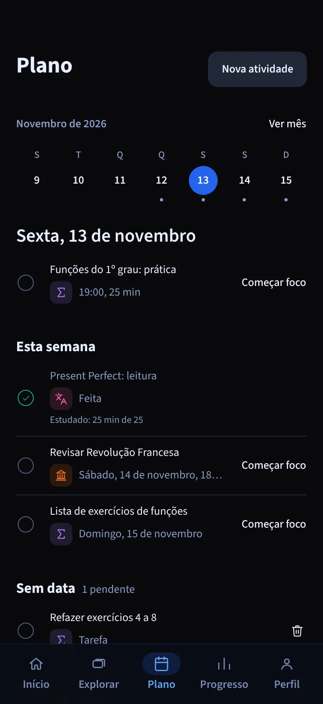
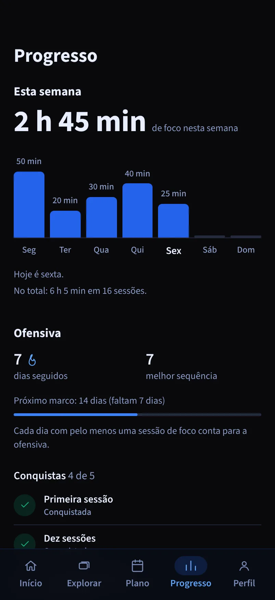
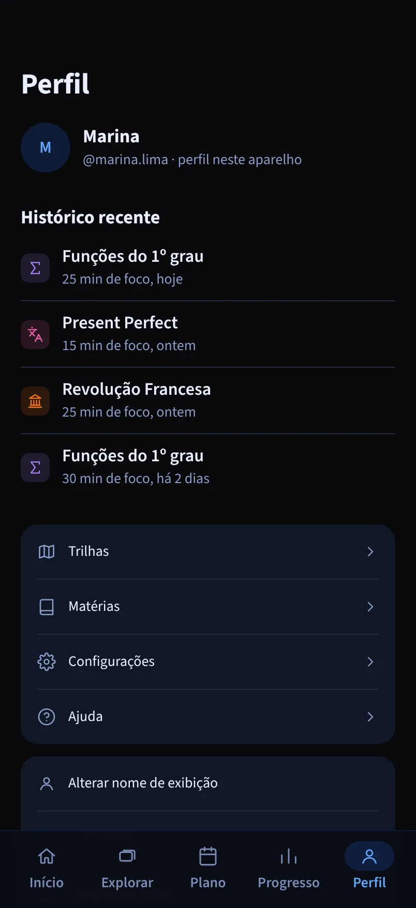
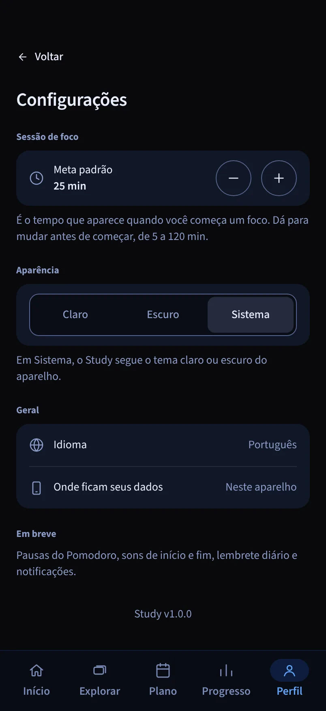
No computador
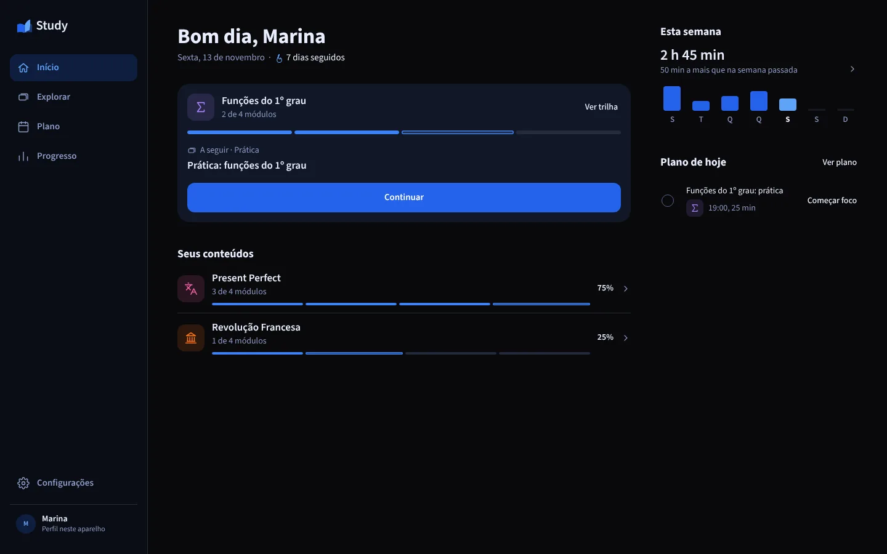
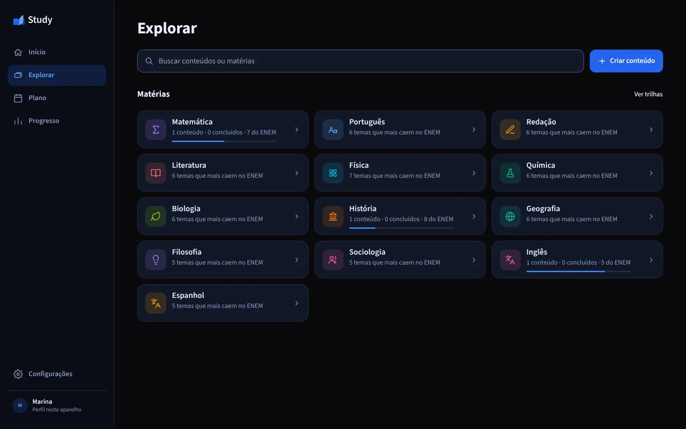
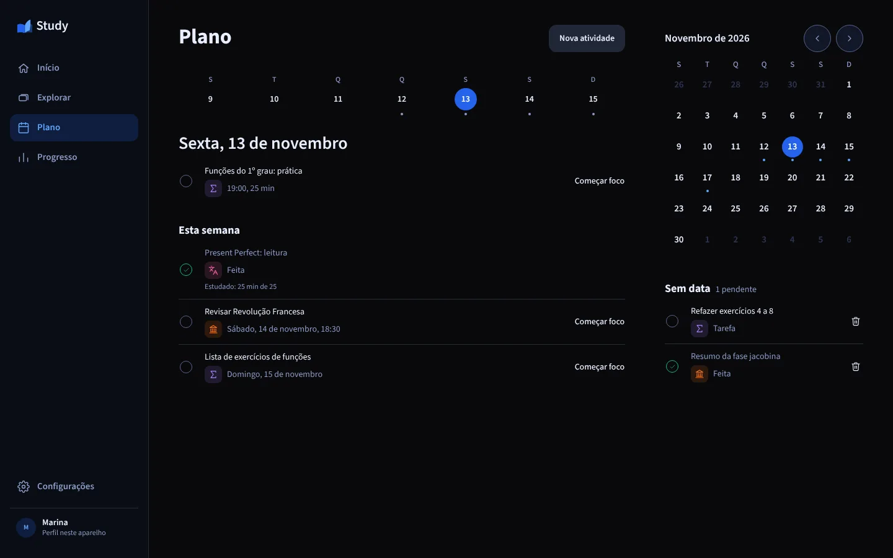
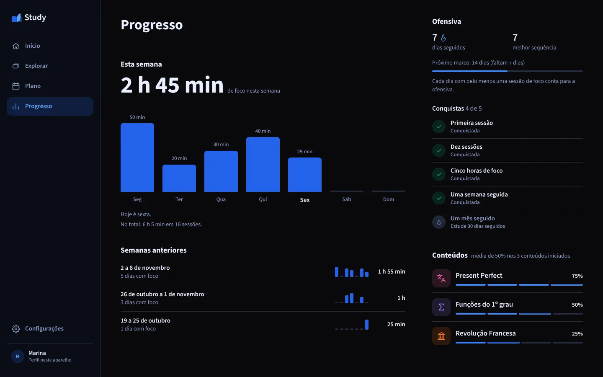
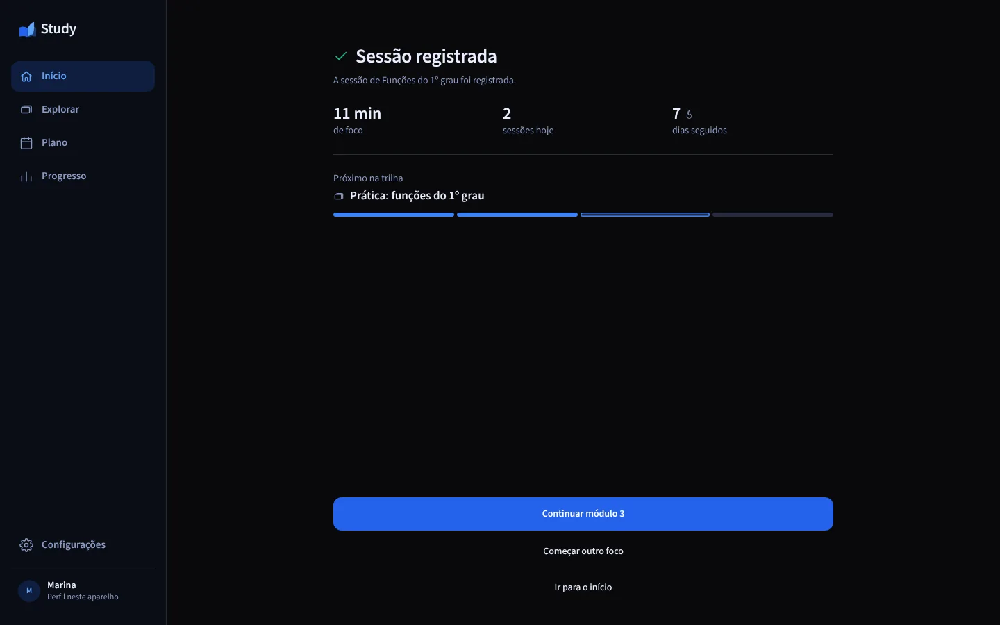
Identidade e design system
A marca
Criei a identidade junto com o produto. O símbolo é um livro aberto com uma página virando, desenhado em três tons do mesmo azul, e abre o app numa animação curta que respeita a preferência de movimento reduzido. O nome se escreve “Study”, com maiúscula só no início. A paleta azul-marinho e preta ficou pensada para estudar à noite sem cansar a vista. Design
Tokens de cor nos dois temas
- Fundo#09090B
- Superfície#111827
- Ação principal#2563EB
- Texto#E8EEFF
- Texto secundário#8B9CC8
- Videoaula#60A5FA
- Leitura#10B981
- Prática#F59E0B
- Avaliação#A78BFA
| Token | Uso | Escuro | Claro |
|---|---|---|---|
--text-primary | Texto | #E8EEFF · 17,2:1 | #0D1B38 · 15,9:1 |
--text-secondary | Texto secundário | #8B9CC8 · 6,5:1 | #3D4E78 · 8,2:1 |
--blue-500 | Ação principal (texto branco sobre ela: 5,2:1) | #2563EB | #2563EB |
--mod-video | Videoaula | #60A5FA · 7,0:1 | #1D4ED8 · 6,7:1 |
--mod-reading | Leitura | #10B981 · 7,0:1 | #065F46 · 7,7:1 |
--mod-practice | Prática | #F59E0B · 8,3:1 | #92400E · 7,1:1 |
--mod-quiz | Avaliação | #A78BFA · 6,5:1 | #6D28D9 · 7,1:1 |
--success / --warning / --error | Somente feedback de estado | #10B981 · #F59E0B · #EF4444 | #065F46 · #92400E · #B91C1C |
--focus | Anel de foco do teclado | #818CF8 | #4338CA |
Por que as cores dos módulos mudam no tema claro: o verde da leitura (#10B981) teria 2,5:1 sobre branco e o âmbar da prática (#F59E0B), 2,2:1. As versões escuras passam de 7:1.
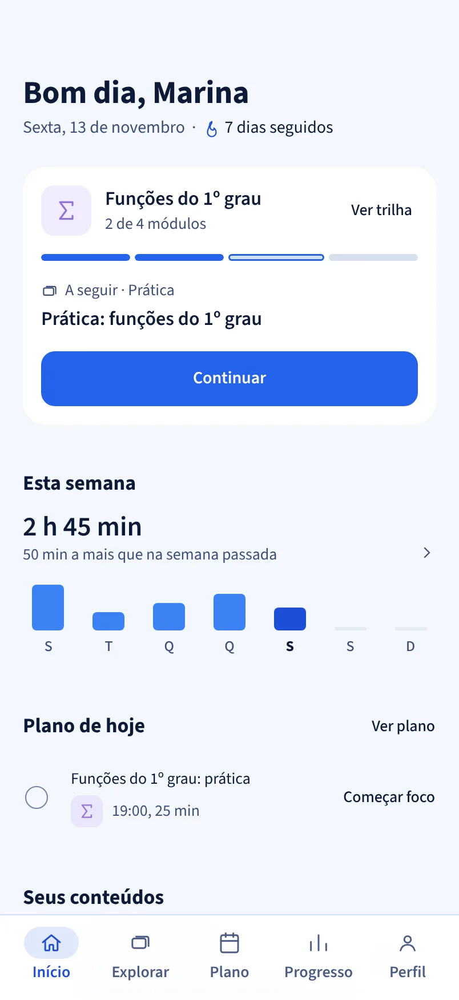
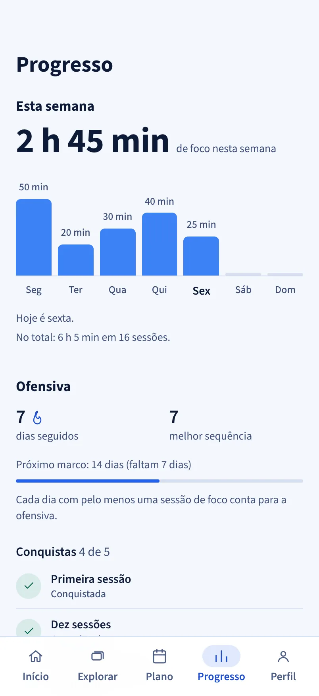
Tipografia, espaçamento, raios e movimento
- Tipografia
- Uma família só, Source Sans 3, na interface e no texto das leituras. Escala em px: 11 legenda, 12 apoio, 13 e 14 corpo, 16 destaque, 18 título, 20 a 24 títulos de tela, 28 a 40 números grandes.
- Espaçamento
- Escala de 4 px.
- Raios
- 8 px em chips e ícones, 12 em controles, 16 em cards, 20 em cards de destaque, 24 em folhas e pílula em badges.
- Movimento
- Três durações (140, 220 e 420 ms) e 250 ms no preenchimento da trilha. Tudo desliga quando o sistema pede movimento reduzido.
- Temas
- Escuro, claro ou do sistema, aplicado antes da primeira pintura, sem piscar. O claro foi derivado à mão do escuro, não por inversão automática.
Componentes e estados
| Componente | Variações e estados |
|---|---|
| Trilha segmentada | Um segmento por módulo: concluído, próximo (contorno) e pendente. Aparece no Início, na trilha, na barra de foco e na conclusão. |
| Barra de foco | Foco não iniciado com “Começar foco”, em andamento com tempo restante e pausa, e pausado com retomar. No computador vira um bloco na navegação lateral. |
| Botões | Primário, secundário, tonal, discreto, perigo e pílula. Estados pressionado, desabilitado e carregando. |
| Campos e seletores | Campo com rótulo, chips de matéria, controle segmentado do tema, passo a passo de minutos e paleta de cores. Contorno de campo com 3:1. |
| Listas e cards | Linha de conteúdo com progresso, gaveta de matéria, linha de módulo com tipo e estado, card de destaque e grupos de configurações. |
| Navegação | Barra de cinco abas no celular, navegação lateral recolhível no computador e botão voltar. |
| Camadas | Folha inferior, diálogo de confirmação e modo foco em tela cheia. |
| Feedback | Carregando (esqueleto), erro com Tentar novamente, vazio com ação sugerida, sessão registrada e aviso de progresso trazido do modo visitante. |
Critérios de uso
- Componentes usam só tokens, nunca cores soltas. Um tema novo muda apenas o bloco de tokens.
- Um botão primário por tela, para a ação principal.
- Cor de módulo sempre acompanhada de ícone e rótulo.
- Verde, âmbar e vermelho só para estados, nunca para identificar matérias.
- Todo conteúdo que depende de rede tem estado de carregamento, de erro e, quando cabe, de vazio.
Limite. Hoje o código é a fonte da verdade do design system. A biblioteca do Figma ainda vai ser reconciliada com ele, e não há página de documentação com exemplos interativos.
IA, estados de erro e particularidades
Gemini
Monta a trilha e gera a leitura, os flashcards, a avaliação e o resumo de cada matéria.
ImplementadoLeitura com fontes
A leitura é gerada com a busca do Google ligada. As páginas usadas aparecem no fim, separando as que sustentam o texto das que foram só consultadas. Sem fontes, o app diz isso.
ImplementadoYouTube
Busca a videoaula do assunto do módulo, com filtros para manter resultados educativos, e toca dentro do app.
ImplementadoO que a pessoa vê quando algo demora ou falha
| Estado | Como aparece no produto |
|---|---|
| Carregando | Esqueleto no lugar do conteúdo e uma frase que diz o que está sendo preparado. |
| Erro | Mensagem específica, em linguagem simples, com Tentar novamente. |
| Sem conexão | Aviso de que o servidor não respondeu, por exemplo enquanto o servidor gratuito acorda. |
| Sem perfil | Para o visitante, uma folha explica por que criar conteúdo pede perfil e oferece os dois jeitos de entrar. |
| Vazio | Estado vazio com uma ação sugerida, como no plano e nos conteúdos. |
Desafios técnicos
Respostas fora do formato. O servidor valida cada resposta antes de entregá-la: a avaliação precisa de 10 questões com uma alternativa certa, os flashcards ficam entre 4 e 12 e a leitura tem tamanho mínimo. Se falhar, tenta de novo e passa por uma cadeia de modelos alternativos.
Cota, tempo e custo. As chamadas entram numa fila (duas por vez, até 40 esperando) com 38 segundos de orçamento por pedido. As respostas ficam em cache por 24 horas, e uma resposta antiga pode ser reaproveitada por até 14 dias se o serviço falhar. Há limite de pedidos por IP.
Trilhas de exemplo sem IA. As três trilhas do modo visitante foram escritas e revisadas antes. Abrem na hora e não gastam cota.
Segurança. O texto digitado pela pessoa é tratado antes de entrar nos prompts, e as chaves das APIs ficam no servidor, nunca no navegador.
O conteúdo gerado não passa por revisão humana. Os validadores garantem o formato, não a precisão.
Acessibilidade
No código
- Rótulos e papéis para tecnologias assistivas em botões, abas, diálogos e no cronômetro.
- Link para pular ao conteúdo e anel de foco com cor própria nos dois temas.
- Áreas de toque de pelo menos 44 px e contorno de campos com contraste de 3:1.
- Animações e abertura desligadas quando o sistema pede movimento reduzido.
- Texto e cores de módulo acima de 4,5:1 nos dois temas.
Ainda não verificado
- Uso completo com leitor de tela, como NVDA, VoiceOver e TalkBack.
- Navegação só por teclado em todos os fluxos.
- Uso com zoom de 200% e texto ampliado.
- Testes com pessoas que usam tecnologias assistivas.
Demo e limitações atuais
O Study está no ar e dá para testar sem cadastro.
- Acesso
- “Só dar uma olhada” abre as trilhas de exemplo. Para criar conteúdo com IA, crie um perfil ou entre com o Google.
- Hospedagem gratuita
- O servidor dorme depois de cerca de 15 minutos sem uso. O primeiro pedido depois disso pode demorar.
- Cotas das APIs
- A geração depende das cotas da IA e do YouTube. Se falhar, tente de novo mais tarde.
- Seus dados
- Ficam no navegador. Limpar os dados do site apaga o progresso.
- Código-fonte
- Repositório público no GitHub: gabrielrocha1260-svg/Studyapp (abre em nova aba).
Limitações conhecidas
- Não há contas no servidor, então nada sincroniza entre aparelhos. O app diz isso já na entrada.
- O conteúdo gerado não é revisado por pessoas, e ainda não dá para sinalizar um erro dentro do app.
- O app não coleta dados de uso, então hoje não há como medir adoção ou conclusão.
- O app compila no navegador, o que deixa a primeira carga mais pesada.
- Nada foi testado com usuários.
Como testar em poucos minutos
- EntrarAbra a demo e toque em “Só dar uma olhada”.
- Abrir uma trilhaNo Início, toque em Continuar numa das trilhas de exemplo.
- Ligar o focoDentro do módulo, toque em “Começar foco” e depois na barra para abrir o modo foco.
- EncerrarEncerre a sessão e veja o tempo registrado e o próximo módulo.
- Ver o progressoAbra a aba Progresso.
O que é fato e o que é hipótese
| Afirmação | Tipo | Base |
|---|---|---|
| As funcionalidades e telas mostradas existem e funcionam. | Implementado | Código do produto e demo pública, novembro de 2026. |
| Tokens, temas e componentes do design system. | Implementado | Inventário tirado do código publicado. |
| Contraste dos pares de cor principais. | Calculado | Fórmula de contraste da WCAG aplicada aos tokens. Não é auditoria completa. |
| Quem estuda sozinho tem dificuldade de se organizar. | Hipótese | Premissa de projeto. Sem entrevistas. |
| As decisões de interface facilitam o uso. | Hipótese | Justificativas de design e retorno de um designer, sem observação de uso. |
| Entrevistas e testes de usabilidade. | Planejado | Roteiro pronto, recrutamento de 5 a 8 estudantes em andamento. Nenhuma sessão feita. |
| Métricas de uso e de resultado. | Planejado | O app não coleta dados de uso. Nenhum número foi medido. |
Plano de testes de usabilidade Planejado
Nenhuma sessão aconteceu e não há resultados. Quando houver, eles entram aqui com data, número de participantes e limitações.
- Objetivo
- Ver se quem estuda por conta própria consegue, sem ajuda, entrar, começar uma trilha, estudar um módulo com o foco ligado e entender o próprio progresso.
- Formato
- Entrevista curta e teste moderado, remoto ou presencial, com 5 a 8 estudantes, na demo pública, pensando em voz alta. Cerca de 40 minutos.
- Participantes
- Vestibulandos, universitários e autodidatas que estudam por conta própria pelo menos duas vezes por semana. Sem designers nem pessoas próximas do projeto.
- O que vou observar
- Conclusão de cada tarefa sem ajuda, tempo, erros e hesitações, e uma nota de facilidade de 1 a 7 por tarefa.
Tarefas
- Entrar no app sem criar conta e abrir uma trilha.
- Começar uma sessão de foco no módulo e depois encerrá-la.
- Criar um conteúdo próprio numa matéria nova.
- Descobrir quanto tempo estudou na semana.
- Planejar uma revisão para amanhã.
O que observar
- Se acha “Começar foco” sem procurar.
- Se entende a diferença entre perfil e conta Google.
- Se percebe que pode abrir os módulos fora de ordem.
- Se entende “Ofensiva” e o que conta como dia de estudo.
- Se a pausa automática incomoda.
O que eu poderia mudar
- Se o foco não for encontrado, dar a ele um atalho no Início.
- Se o perfil local confundir, reescrever a entrada.
- Se a ordem livre atrapalhar, avisar antes da avaliação.
- Se “Ofensiva” não for entendida, trocar o nome.
Como vou priorizar. Cada problema recebe gravidade de 0 a 4, pela frequência, pelo impacto na tarefa e por se a pessoa contorna sozinha. Primeiro corrijo o que impede a tarefa, depois o que se repete. Com poucos participantes, os achados mostram problemas, mas não dizem com que frequência eles acontecem em geral.
Métricas que eu acompanharia
Nenhuma destas métricas foi medida. O app não coleta dados de uso, então não há linha de base, e preferi não definir metas numéricas antes de ter uma.
| Objetivo | Métrica proposta | Como medir |
|---|---|---|
| Chegar ao estudo sem atrito | Pessoas que abrem o primeiro módulo na primeira visita | Teste de usabilidade e, depois, evento de abertura de módulo |
| Ligar o foco ao estudo | Sessões de foco iniciadas dentro de um módulo | Evento de início de sessão, com consentimento |
| Levar até o fim da trilha | Trilhas concluídas com avaliação 7,0 ou mais | Evento de avaliação concluída |
| Converter visitantes | Visitantes que criam perfil ou entram com o Google | Evento de entrada com a origem |
| Manter o hábito | Pessoas que voltam na semana seguinte | Retenção semanal, o que exige contas no servidor |
| Conteúdo gerado confiável | Gerações que falham e erros sinalizados | Registro no servidor e um botão de sinalizar erro, que ainda não existe |
Aprendizados e próximos passos
O que o projeto me ensinou
A primeira ideia era um meio
Comecei desenhando um cronômetro. O produto ficou de pé quando o cronômetro passou a servir à trilha, e não o contrário.
Interface de IA é interface de falha
Respostas geradas podem vir lentas, incompletas ou erradas. Carregamento, erro, nova tentativa e conteúdo escrito à mão para o visitante fazem parte do desenho.
Cadastro é decisão de produto
Deixar experimentar antes de pedir conta mudou a entrada, o modo visitante e a forma de levar o progresso junto.
Próximos passos
Já anunciados no app como Em breve Em breve
- Pausas curtas e longas do Pomodoro.
- Sons de início e fim de sessão.
- Lembrete diário e notificações.
Passos que vêm em seguida
- Entrevistar e testar com 5 a 8 estudantes, e trazer os resultados para este case.
- Reconciliar a biblioteca do Figma com o design system do código.
- Permitir que a pessoa sinalize erros no conteúdo gerado.
- Testar a acessibilidade com tecnologias assistivas e com pessoas reais.
- Separar o app em módulos e gerar um build, sem compilar no navegador.